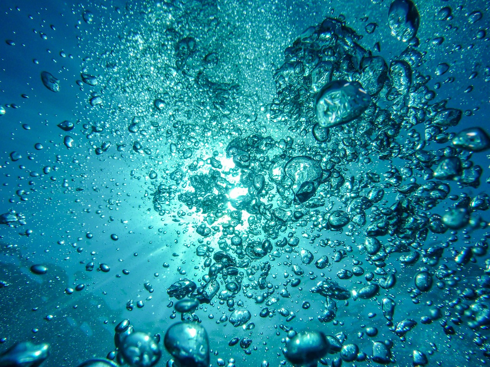

Lecture 7 – Theory of the Ventilated Thermocline
(Gas bubbles rise toward the ocean surface. Credit: MartinStr)
Ventilation
Ventilation connects the atmosphere and ocean interior through the transfer of fluid from the surface mixed layer into the ocean interior. Water masses are formed in the surface mixed layer and acquire their characteristics through the exchange of heat, moisture and dissolved gasses with the atmosphere. When the water masses are transferred beneath the mixed layer, they are shielded from the atmosphere and only subsequently modify their properties by mixing in the ocean interior. Hence, the ventilation process helps to determine the relatively long memory of the ocean interior, compared with the surface mixed layer.Ocean Subduction
Ocean subduction involves the transfer of fluid from the mixed layer into the stratified thermocline. The upper ocean is ventilated principally through the subduction process, while the deep ocean is ventilated through open-ocean convection and cascading down coastal boundaries. The term “ocean subduction” makes the geologicial analogy of a subduction zone where a rigid plate of the Earth’s lithosphere slides beneath a more buoyant plate and into the hotter part of the mantle.Subduction occurs throughout the global ocean: over recirculating wind-driven gyres within ocean basins (with horizontal scales of several thousand kilometers), across frontal zones and convective, overturning chimneys (on horizontal scales of several hundred to tens of kilometers). The reverse of the subduction process leads to the transfer of fluid from the main thermocline into the seasonal boundary layer, which affects the properties of the mixed layer and air–sea interaction; this negative subduction is sometimes referred to as obduction.

(A schematic diagram showing isopycnals in the thermocline outcropping into a vertically homogeneous mixed layer. The subduction rate, $S$, measures the rate at which fluid passes into the stratified thermocline through the vertical and horizontal transfer from the mixed layer. In comparison, the wind-induced Ekman downwelling, $-w_e$, measures the vertical flux pumped down from the surface Ekman layer.
Credit: Marshall, J.C., Nurser, A.J.G., and Williams, R.G. (1993).)
Seasonal boundary layer is a region over which the mixed layer and seasonal thermocline occur. The base of the seasonal
boundary layer is defined by the maximum thickness of the winter mixed layer.The subduction process involves the seasonal cycle of the mixed layer. The mixed layer is vertically homogenous through the action of convective overturning and turbulent mixing.
- At the end of winter, the mixed layer is at its maximum density and thickness, and overlies the main thermocline (where there is a strong vertical temperature gradient).
- During spring and summer, the surface warming forms a seasonal thermocline, which is capped by a thin, wind-stirred, mixed layer.
- During autumn and winter, the cooling of the surface ocean leads to a buoyancy loss and convective overturning. The mixed layer thickens and entrains fluid from the underlying thermocline until the cooling phase ceases at the end of winter.
- Fluid is subducted from the mixed layer into the thermocline during the warming in spring and summer.
- fluid is entrained into the mixed layer from the thermocline during the cooling in autumn and winter.
(A schematic diagram illustrating the seasonal cycle of the mixed layer following the movement of a water column.
The mixed layer thins in spring and summer, and thickens again in autumn and winter. If there is an overall buoyancy input, the end of winter mixed layer becomes lighter and thinner from one year to the next.
Consequently, fluid is subducted irreversibly from the mixed layer into the main or permanent thermocline. The mixed layer thickness is marked by the thick dashed line, and isopycnals $\rho_m$ outcropping at the end of winter into the mixed layer by the full lines, and the isopycnal identifying the base of the seasonal thermocline by the short-dashed line.
The annual subduction rate, $S_{\text{ann}}$, determines the vertical spacing between the isopycnals subducted from the mixed layer in March for consecutive years 1 and 2 ($\tau_{\text{year}} =$ 1 year).
Credit: Williams and Follows (2011).)
Next: Lecture 8 – Waves